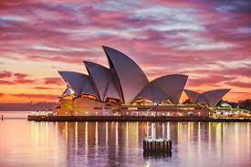
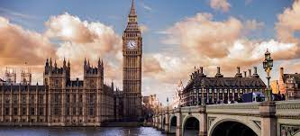

Paris, France

Paris, city and capital of France, situated in the north-central part of the country. People were living on the site of the present-day city, located along the Seine River some 233 miles (375 km) upstream from the river’s mouth on the English Channel (La Manche), by about 7600 BCE. The modern city has spread from the island (the Île de la Cité) and far beyond both banks of the Seine.
Paris occupies a central position in the rich agricultural region known as the Paris Basin, and it constitutes one of eight départements of the Île-de-France administrative region. It is by far the country’s most important centre of commerce and culture. Area city, 41 square miles (105 square km); metropolitan area, 890 square miles (2,300 square km).
Santorini, Greece

Santorini, known since ancient times as Thira, is one of the most famous islands in the world. The fact that you can sit in front of the caldera, enjoy local dishes, a drink or a coffee while gazing at the remarkable beauty of an active volcano is priceless!
The island is actually a group of islands consisting of Thira, Thirassia, Aspronissi, Palea and Nea Kameni in the southernmost part of the Cyclades.
Santorini’s volcano is one of the few active volcanoes on Greek and European land The islands that form Santorini came into existence as a result of intensive volcanic activity; twelve huge eruptions occurred, one every 20,000 years approximately, and each violent eruption caused the collapse of the volcano’s central part creating a large crater (caldera). The volcano, however, managed to recreate itself over and over again.
Tokyo, Japan

Tokyo, city and capital of Tokyo to (metropolis) and of Japan. It is located at the head of Tokyo Bay on the Pacific coast of central Honshu. It is the focus of the vast metropolitan area often called Greater Tokyo, the largest urban and industrial agglomeration in Japan.
The site of Tokyo has been inhabited since ancient times; the small fishing village of Edo existed there for centuries. Edo’s development into a city did not occur until the Tokugawa period (1603–1867), when it became the capital of the Tokugawa shogunate. During this period, however, the imperial family remained in Kyōto, the ancient imperial capital. With the Meiji Restoration of 1868, which ended the shogunate, the capital was moved to Edo. The city was renamed Tokyo, meaning “eastern capital.” Edo had been Japan’s largest city since the 17th century. Tokyo’s population exceeded one million in the late 19th century, and as Japan’s political, economic, and cultural centre it became one of the world’s most populous cities in the 20th century.
Rome, Italy

Travelers from all around the world agree that there’s something dreamy and enigmatic about this city. Be it the art, the culture, or the ruins of The Forum and the Colosseum that evoke the power of the ancient Roman Empire. This city top the list when we talk about the must visit places in the world, for obvious reasons. Rome stands as a city with the perfect blend of modern with ancient. When you walk down its streets, you will find yourself swiftly time traveling. The food culture of Rome has given Pasta and Gelato to the world so when you get tired of walking and traveling you can indulge your senses in some amazing culinary treats. Rome effortlessly tops its name among the places to visit before you die.
Sydney, Australia
The glorious Opera House and the Sydney Harbour Bridge are not the only charms of this Australian city. Blessed with a mild and warm climate, it is one of the must visit countries in the world, a place that can be visited throughout the year. The magnificent beaches will ensure that your eyes never get bored. The art gallery of New South Wales and The Museum of Contemporary arts are two of the popular destinations for the art lovers while the music aficionados can spend time at Opera house or one of the free concerts. Doesn’t matter what part of the world you are from, and your interests are, Sydney will never disappoint you.
London, England
The city of London effortlessly mingles the antique and the contemporary, through a dizzying array of sights, smells, and sounds. This timeless city has something for everyone, from the Buckingham Palace and Westminster Abbey. It capture the interests of the people who are fascinated by the grandiose of the royal family, to the West End Theatre District and the Portobello Road Market which attract the art and culture appreciators. Take a river cruise on the River Thames, enjoy the sights of the city from the top of the Eye of London or just hop around from a pub to another around Soho and London Bridge.